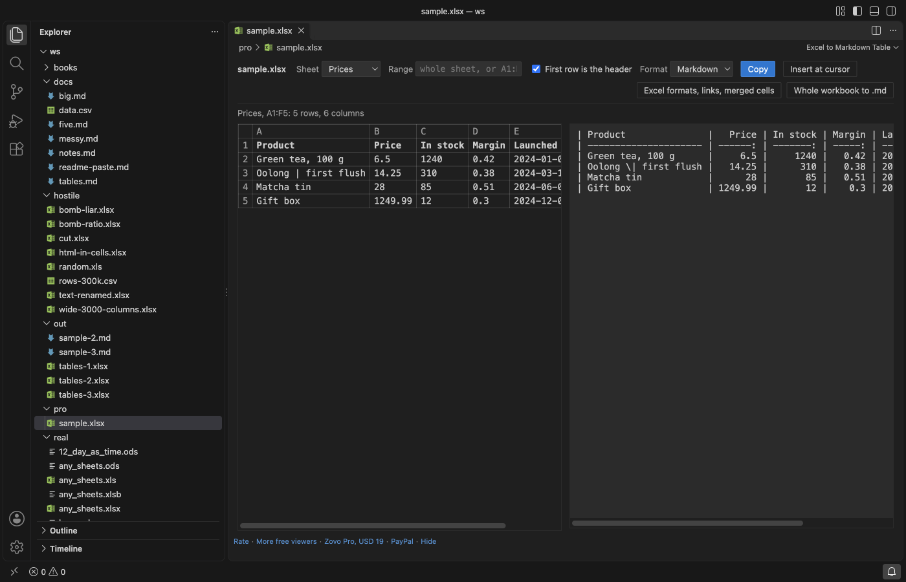

Open files in VS Code and Cursor / Tables and data
Turn Excel cells, a sheet or a CSV file into a Markdown table in VS Code
Excel to Markdown (Paste & CSV) pastes cells copied from Excel, Google Sheets, Numbers or LibreOffice Calc into a Markdown file as an aligned Markdown table: right-click in the file and pick Paste as Markdown Table. It also opens .xlsx, .xls, .ods and .csv files so you can copy a sheet or a range such as A1:D20 as Markdown, and converts CSV or TSV text to a table and back. All of that is free and offline. Zovo Pro (USD 19 once) adds whole-workbook conversion to .md files, Markdown tables saved as an Excel file, and Excel display formats, with 3 free tries each.
Free, MIT license. Extension ID zovo.zovo-excel-to-markdown, version 0.1.2. Needs VS Code 1.90.0 or newer.

Steps in VS Code
- Install Excel to Markdown (Paste & CSV) from the Marketplace, or press Ctrl+P (Cmd+P on macOS) and run
ext install zovo.zovo-excel-to-markdown. - Copy cells in Excel, Google Sheets, Numbers or LibreOffice Calc.
- In a Markdown file, right-click and pick Paste as Markdown Table, or run "Excel to Markdown: Paste as Markdown Table" from the Command Palette. The first row becomes the header and number columns are right-aligned. Normal paste (Ctrl+V or Cmd+V) is never changed.
- For a workbook, right-click an
.xlsx,.xlsm,.xlsb,.xls,.ods,.csvor.tsvfile in the Explorer and pick Open Spreadsheet as Markdown Table. - Choose the sheet, type a range (
A1:D20,B:D,2:10) or leave it empty for the whole sheet, then click Copy or Insert at cursor. The Format list also gives HTML, AsciiDoc, Jira, CSV or TSV. - To tidy a table you already have, put the cursor in it and run "Excel to Markdown: Format Markdown Table". The pipes line up and the alignment row is kept.
Where Zovo Pro saves time
Paste as Markdown Table, CSV and TSV to Markdown and back, Format Markdown Table and the workbook preview with sheet, range and every output format are free, with no limit, no sign-in and no network calls. There is no trial timer and no license banner.
When a workbook has many sheets, or a folder holds many workbooks, Convert workbooks to Markdown files writes every sheet of each workbook to a .md file next to it, with one heading per sheet. It asks before it replaces Markdown files that exist already. The other two Pro tools are Save Markdown tables as an Excel file, which puts every table of a Markdown document in one .xlsx with one sheet per table and numbers stored as numbers, and Keep Excel formats, links and merged cells, which shows cells as Excel shows them (1,234.50, 25%), hyperlinks as Markdown links and merged cells filled in.
With Convert workbooks to Markdown files (Zovo Pro)
- Right-click a workbook or a folder in the Explorer and pick "Zovo Pro: Convert Workbooks to Markdown Files", or click "Whole workbook to .md" in the spreadsheet preview.
- From the Command Palette ("Excel to Markdown: Convert workbooks to Markdown files (Pro)"), pick the workbooks or a folder. If some
.mdfiles exist already, choose Replace them or Skip them. - A message says how many files and sheets were written. Click Open the first one to see the result.
Convert workbooks to Markdown files works 3 times on your computer before it asks for a license, and a try counts only when you get a result. Opening a file shows no popup and no countdown.
Zovo Pro costs USD 19 once. It is not a subscription, and it turns on the Pro tools in every Zovo extension, not only Excel to Markdown (Paste & CSV). After a card payment (Stripe) your license key shows on the next page. In VS Code, run "Zovo Pro: Enter Zovo Pro license key" from the Command Palette and paste it. The key is checked on your computer, with no network call. With GitHub Sponsors, pick the "$19 one time" tier, then run "Zovo Pro: I already paid: unlock with GitHub Sponsors" and sign in with the same GitHub account. With PayPal, send USD 19 with "Zovo Pro" in the note and the key comes by email within a day.
A team of 5: USD 59 once, by card or by PayPal. Every rule and every Pro tool is on the Zovo Pro page.
Steps in Cursor, Windsurf or VSCodium
- Open the Extensions view with Ctrl+Shift+X (Cmd+Shift+X on macOS).
- Search for
zovo.zovo-excel-to-markdownand click Install. Cursor, Windsurf and VSCodium install from Open VSX, where it is published aszovo/zovo-excel-to-markdown. - If your editor has no gallery, download the .vsix from the Open VSX page and run "Extensions: Install from VSIX...".
- Then use it the same way as in VS Code.
What Excel to Markdown (Paste & CSV) handles
- Numbers such as
1,250,12.50,12%,(35)and amounts with a currency sign count as numbers, so their columns are right-aligned. - Pipes and backslashes in cells are escaped, and a line break inside a cell becomes
<br>, so every cell stays in its column. - Columns line up in the editor, also with Chinese, Japanese and Korean text and emoji.
- Pastes up to 10 MB, 200,000 rows and 2,000 columns. Workbooks are read in a separate worker with a time and memory limit, so a broken file gives a message instead of a frozen editor.
What it does not do
- In the free preview cells come as they are stored: plain numbers, and dates in ISO form (2026-01-05). Excel display formats such as
25%or1 Jan 2024are the Pro tool Keep Excel formats. - Pastes over 10 MB, 200,000 rows or 2,000 columns give a message instead of a table.
Other options
- Excel to Markdown table (
csholmq.excel-to-markdown-table, 281,875 installs, not on Open VSX). Its own description: "Copy Excel data and convert to Markdown table format". - CSV to Markdown Table (
phoihos.csv-to-md-table, 34,215 installs, not on Open VSX). Its own description: "Convert CSV/TSV/PSV text to GitHub Flavored Markdown table". - Pandoc. A free command-line converter that can turn a CSV file into a Markdown table.
Install counts and Open VSX status were checked on 12 November 2026. Descriptions in quotes are the extensions' own.
Questions
Why does pasting from Excel into a Markdown file give tab-separated text?
Excel puts cells on the clipboard as text with tabs between them. VS Code pastes that text as it is. Paste as Markdown Table turns it into a table instead.
Does it change normal paste?
No. Ctrl+V or Cmd+V pastes as before. You can add your own key for Paste as Markdown Table with "Excel to Markdown: Add a keybinding for Paste as Markdown Table".
Can I turn a Markdown table back into Excel?
Into CSV or TSV, yes, for free: "Excel to Markdown: Convert Markdown Table to CSV / to TSV". Saving every table of a document as an .xlsx file is the Pro tool Save Markdown tables as an Excel file.
Does it work in Cursor or Windsurf?
Yes. Cursor, Windsurf and VSCodium install extensions from Open VSX. Search for the extension in their Extensions view and install it there.
More about Excel to Markdown (Paste & CSV)
Read the Excel to Markdown (Paste & CSV) page for every feature and setting, or the source code on GitHub.
Related guides
- Line up the columns of a Markdown table in VS Code
- Convert a Markdown table back to CSV or Excel
- Open an Excel .xlsx file in VS Code
- Open an Excel file in Cursor
Zovo Pro and support
Zovo Pro: USD 19 once, every Zovo viewer. It turns on the Pro tools in this extension and in the other Zovo extensions you use. The free features stay free.
After a card payment your license key shows on the next page. Paste it with the command "Zovo Pro: Enter a key".
You can also support the work with no Pro:
Need your format supported?
Open a format request with a sample file, and I reply there whether it can be done. For USD 299 once, through this GitHub Sponsors tier, I add your file format or a missing feature to this extension, with tests, within 7 days.